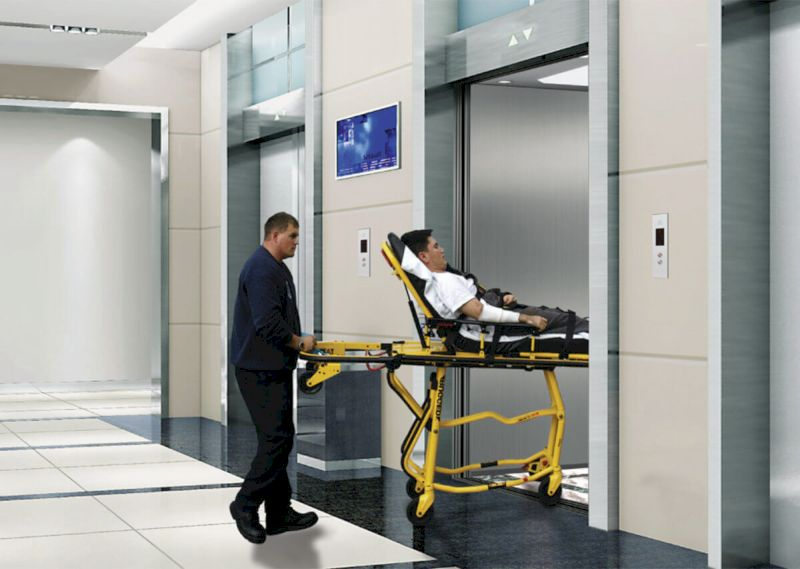
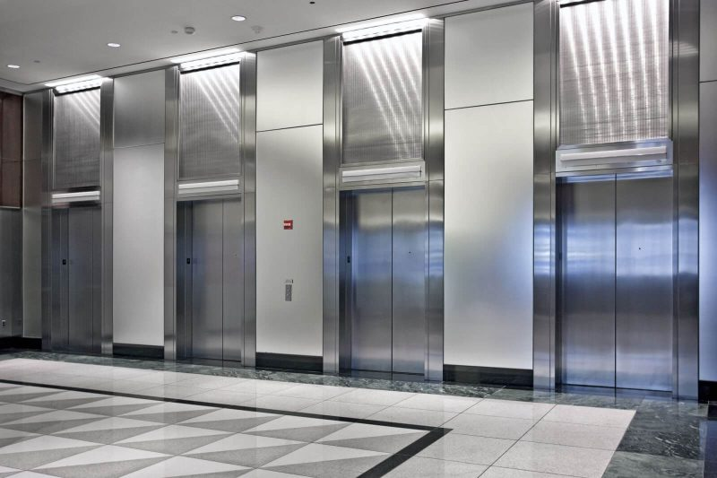
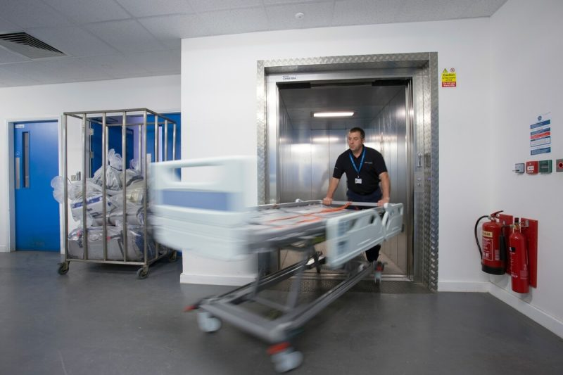
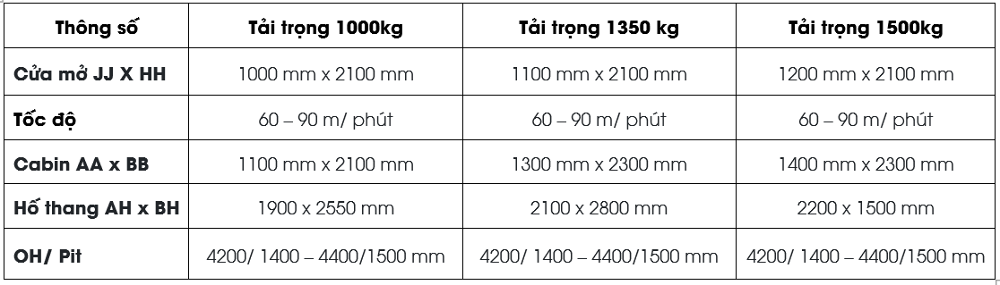
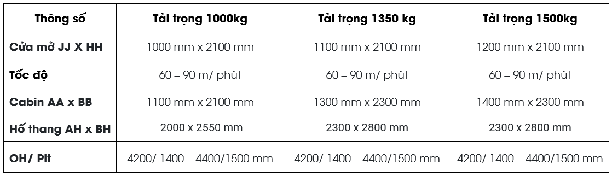
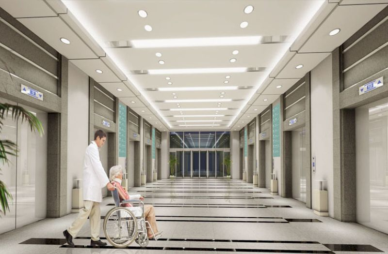

Là dòng thang máy chuyên dùng trong các bệnh viện dùng để di chuyển, chuyên chở bệnh nhân và các thiết bị y tế.

Thang máy bệnh viện là dòng thang máy chuyên dùng trong các bệnh viện dùng để di chuyển, chuyên chở bệnh nhân và các thiết bị y tế. So với các dòng thang máy thông thường thì thang máy tải bệnh viện cũng có một số tiêu chuẩn đặc biệt nhằm đáp ứng nhu cầu khi sử dụng.
Thang máy bệnh viện là một trong những sản phẩm cầu thang máy được thiết kế đặc biệt đảm bảo được độ an toàn cao. Dùng để di chuyển các thiết bị y tế cũng như bệnh nhân khi cấp cứu một cách dễ dàng và nhanh chóng nhất. Vậy dòng thang máy này có những đặc điểm nổi bật gì?

Thang máy bệnh viện có tải trọng từ 750kg – 1600kg với tải trọng này theo tiêu chuẩn chuyên chở được từ 10-24 người/ chuyến
Phần cabin được thiết kế với diện tích đủ rộng để đặt giường bệnh viện và giúp đẩy bệnh nhân di chuyển dễ dàng, có thể giúp bác sĩ, y tá cũng như người nhà bệnh nhân có thể đi kèm.
Đây là dòng cửa lùa về 1 phía (Slide Opening)
Với hành trình 100m tương đương những tòa nhà 30 tầng
Thang máy được di chuyển với vận tốc từ 30m/ phút – 105m/ phút .
Cáp tải là sợi dây cáp được làm từ vật liệu có độ bền và khả năng chịu lực tốt. Nó kết nối cabin và đối trọng qua puly, giúp nâng hoặc hạ cabin và đối trọng xuống theo phương thẳng đứng. Bộ phận cáp được làm từ vật liệu có độ bền và khả năng chịu lực tốt.
So với các dòng thang máy thông thường, thang máy tải bệnh viện có tần suất hoạt động lớn bởi người sử dụng thường xuyên và liên tục.
Hệ thống ánh sáng vừa đủ không quá sáng cũng không quá chói, nếu như quá sáng thì khi bệnh nhân nằm trên giường sẽ cảm giác bị chói lóa và nếu tối quá sẽ gây cảm giác bị âm u, ảnh hưởng tinh thần bệnh nhân.
Đây cũng là một trong những yếu tố được đặt lên hàng đầu khi thiết kế thang máy bệnh viện, bởi vì thang máy dùng để chuyên chở những bệnh nhân, vì vậy mà yếu tố an toàn cực kỳ quan trọng, đảm bảo không gây ra những sai sót không đáng có khi vận hành.
Điều này phụ thuộc vào khoảng cách giữa hai điểm dừng liên tiếp tối thiểu nhất là bao nhiêu, để lựa chọn cửa tầng thang máy thích hợp.
Bộ điều chỉnh thông minh giúp thang máy vận hành một cách cực kỳ trơn tru, đảm bảo dừng nghỉ chuẩn xác điều này giúp tiết kiệm được thời gian khi vận chuyển bệnh nhân, đặc biệt là trong những trường hợp khẩn cấp.
Bộ điều chỉnh thông minh giúp thang máy vận hành một cách cực kỳ trơn tru, đảm bảo dừng nghỉ chuẩn xác điều này giúp tiết kiệm được thời gian khi vận chuyển bệnh nhân, đặc biệt là trong những trường hợp khẩn cấp.
Kích thước gồm cả dung sai kết hợp với thông thủy theo chiều dây dọi. Đối với 20 tầng đầu tiên, thì kích thước dung sai của dây dọi lòng giếng thang sẽ là ± 25mm. Mỗi một tầng thì sẽ được tính tăng thêm 1mm, và thường thì dung sai không được quá 50mm cho tổng chiều cao.





Thang máy Phú Xuân chúng tôi với mức giá ưu đãi
LIÊN HỆ HOTLINE: 0905 599 888 - MR DƯƠNG